아침 영하 1°, 낮에도 4°에 그치는 올가을 첫 한파예요. 두꺼운 니트에 울 코트나 패딩을 꼭 입고, 밤사이 내린 비가 얼 수 있으니 밑창이 단단한 신발이 좋아요. 캘린더에 접근할 수 없어 평일 기준인 근무로 봤어요.
1 / 6
추천
TONYWACK 블랙 케이블 니트 + RECTO 그레이 헤링본 코트
올겨울 코트는 장식을 덜어낸 90년대 미니멀 실루엣이 중심이라, 블랙 니트·블랙 슬랙스 위에 RECTO 그레이 헤링본 코트 하나만 걸쳐 그레이와 블랙 두 톤으로 정리했어요. 올블랙이 딱딱해 보일 땐 색 대신 소재 결을 바꾸라는 조언대로 케이블 짜임과 헤링본 조직으로 변화를 줬어요. 영하 날씨에 맞는 가장 따뜻한 조합이고, 근무 중엔 코트만 벗으면 돼요.
코트RECTO 그레이 헤링본 코트
RECTO 그레이 헤링본 코트는 올블랙 위에 얹는 유일한 밝은 톤이에요. 단추를 잠그고 입으세요.
니트TONYWACK 블랙 케이블 니트
TONYWACK 블랙 케이블 니트는 도톰해서 코트 안에 이것 하나로 충분해요.
정장바지쿠어 블랙 투턱 정장바지
쿠어 블랙 투턱 정장바지로 니트와 색을 이어 다리가 길어 보이게 해요.
부츠ROMANTIC MOVE 블랙 첼시 부츠
ROMANTIC MOVE 블랙 첼시 부츠는 발목을 덮어 따뜻하고 살얼음 길에도 안정적이에요.
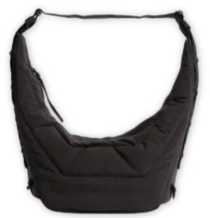
숄더백르메르 블랙 호보 숄더백
르메르 블랙 호보 숄더백을 코트 위에 메면 돼요.
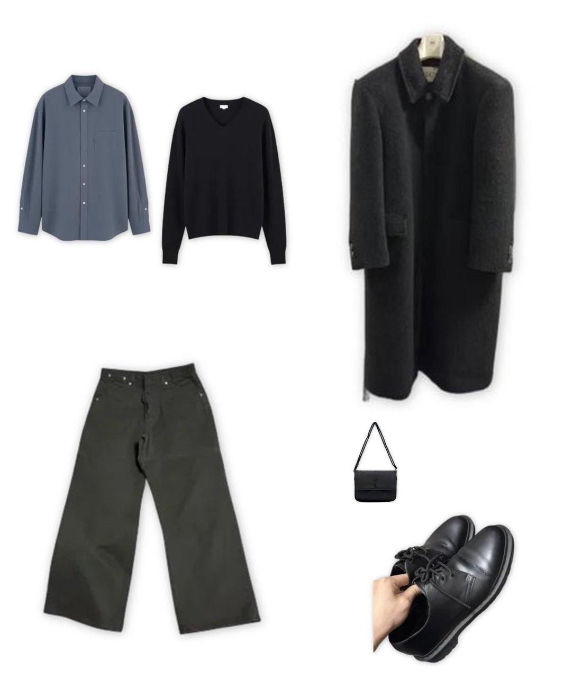
대안
포인트 하나: POTTERY 블루그레이 셔츠 + ART IF ACTS 블랙 브이넥 니트 + RECTO 블랙 발마칸 코트
결국 다시 블랙 롱 코트라는 흐름을 따라 RECTO 블랙 발마칸 코트를 주인공으로 삼았어요. 브이넥 사이로 보이는 POTTERY 블루그레이 셔츠 깃이 이 코디의 유일한 포인트 컬러예요. 셔츠와 니트를 겹쳐 실내에서 온도 조절이 쉬워요.
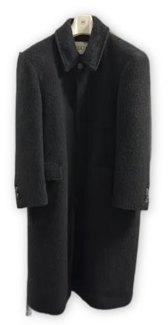
코트RECTO 블랙 발마칸 코트
RECTO 블랙 발마칸 코트는 품이 넉넉해 셔츠와 니트를 겹쳐 입어도 편해요.
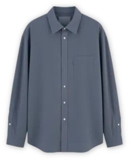
셔츠POTTERY 블루그레이 셔츠
POTTERY 블루그레이 셔츠는 깃과 소매 끝만 살짝 보이게 입어요.
니트ART IF ACTS 블랙 브이넥 니트
ART IF ACTS 블랙 브이넥 니트를 셔츠 위에 겹쳐요.
긴바지어나더 오피스 차콜 와이드 긴바지
어나더 오피스 차콜 와이드 긴바지로 블랙 코트 아래 톤을 한 단계 풀어줘요.
구두DR. MARTENS 블랙 레더 구두
DR. MARTENS 블랙 레더 구두는 밑창이 두꺼워 찬 바닥에 좋아요.
크로스백생로랑 블랙 나일론 크로스백
생로랑 블랙 나일론 크로스백.
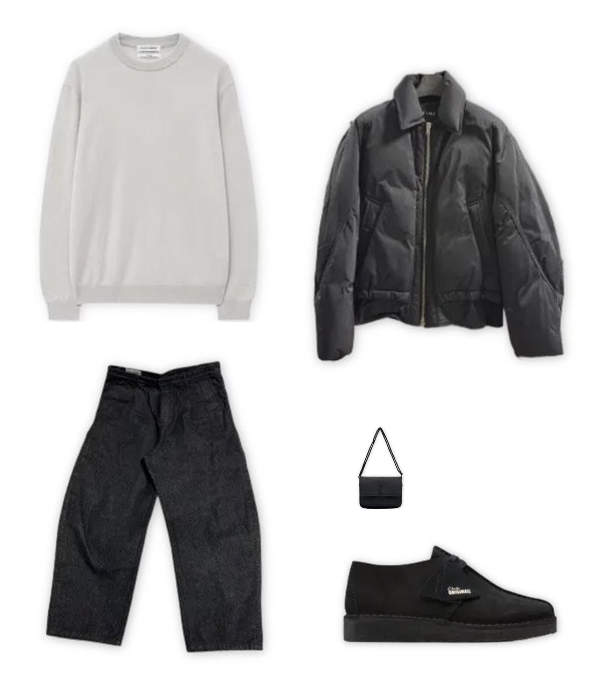
대안
편하게: 더니트컴퍼니 라이트그레이 니트 + TIME HOMME 블랙 숏 패딩
코트보다 가볍고 따뜻한 걸 원할 때의 조합이에요. TIME HOMME 블랙 숏 패딩은 광택이 적고 단정해서 출근길에도 어색하지 않고, 라이트그레이 니트와 차콜 데님으로 블랙에서 그레이까지 톤만 바꿨어요.
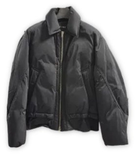
패딩TIME HOMME 블랙 숏 패딩
TIME HOMME 블랙 숏 패딩은 바람이 강한 아침에 지퍼를 끝까지 올려요.
니트더니트컴퍼니 라이트그레이 니트
더니트컴퍼니 라이트그레이 니트가 블랙 패딩 안에서 얼굴을 밝혀줘요. 얇은 이너를 하나 받쳐 입으세요.
청바지ART IF ACTS 차콜 벌룬 청바지
ART IF ACTS 차콜 벌룬 청바지는 숏 패딩과 길이 균형이 좋아요.
구두클락스 오리지널스 블랙 스웨이드 구두
클락스 오리지널스 블랙 스웨이드 구두. 젖은 길은 피해서 걸어요.
크로스백생로랑 블랙 나일론 크로스백
생로랑 블랙 나일론 크로스백.
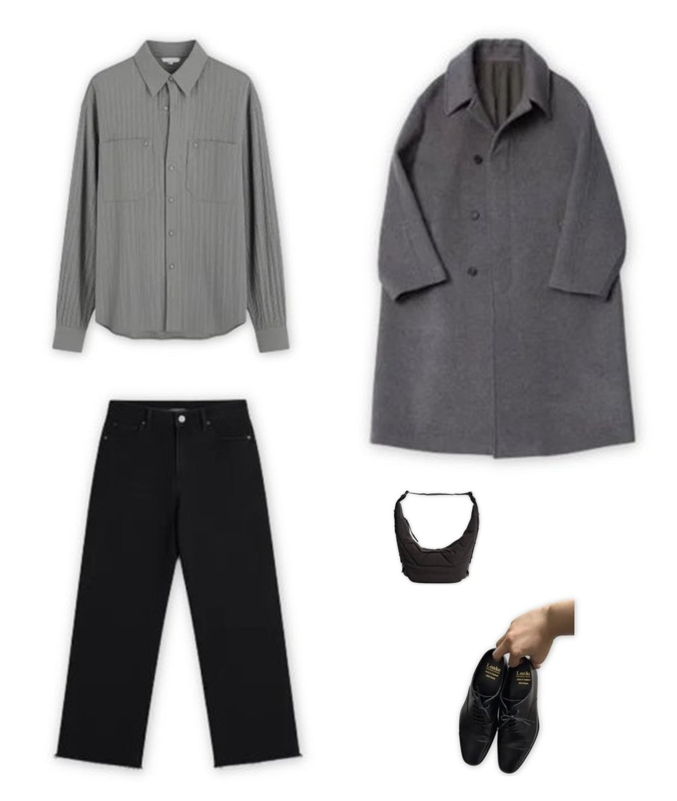
옷장 자동 조합
WAVINESS 그레이 스트라이프 셔츠 + 퍼스트플로어 그레이 싱글 코트
같은 날씨와 격식 기준(무채색 위주, 포인트 컬러는 하나까지)으로 옷장에서 자동으로 고른 조합이에요.
셔츠WAVINESS 그레이 스트라이프 셔츠
코트퍼스트플로어 그레이 싱글 코트
청바지JUNNE 블랙 스트레이트 청바지
구두Loake 블랙 캡토 구두
숄더백르메르 블랙 호보 숄더백
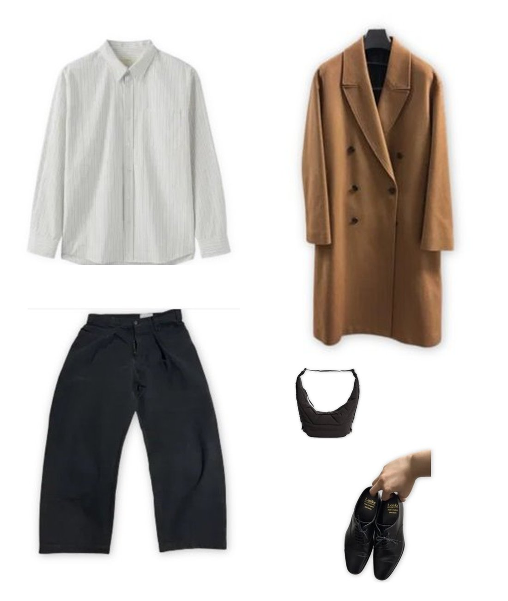
옷장 자동 조합
파브레가 화이트 스트라이프 셔츠 + 쿠어 카멜 더블 코트
같은 날씨와 격식 기준(무채색 위주, 포인트 컬러는 하나까지)으로 옷장에서 자동으로 고른 조합이에요.
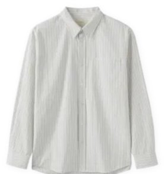
셔츠파브레가 화이트 스트라이프 셔츠
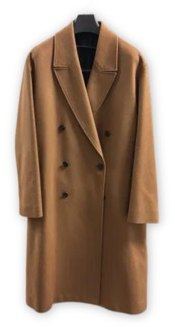
코트쿠어 카멜 더블 코트
청바지ART IF ACTS 블랙 투턱 청바지
구두Loake 블랙 캡토 구두
숄더백르메르 블랙 호보 숄더백
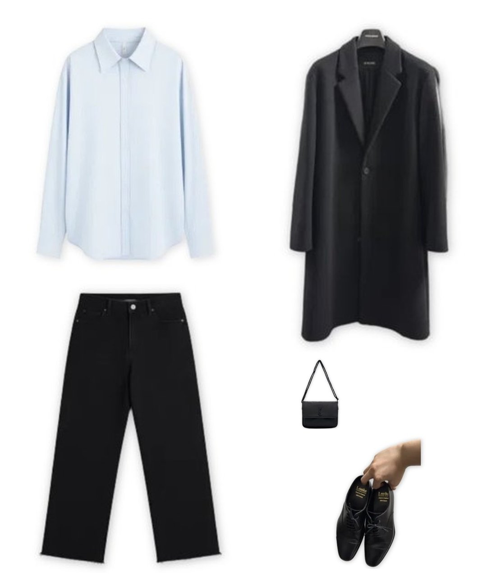
옷장 자동 조합
노이어 라이트블루 셔츠 + IN SILENCE 블랙 싱글 코트
같은 날씨와 격식 기준(무채색 위주, 포인트 컬러는 하나까지)으로 옷장에서 자동으로 고른 조합이에요.

 코트RECTO 그레이 헤링본 코트
코트RECTO 그레이 헤링본 코트 니트TONYWACK 블랙 케이블 니트
니트TONYWACK 블랙 케이블 니트 정장바지쿠어 블랙 투턱 정장바지
정장바지쿠어 블랙 투턱 정장바지 부츠ROMANTIC MOVE 블랙 첼시 부츠
부츠ROMANTIC MOVE 블랙 첼시 부츠